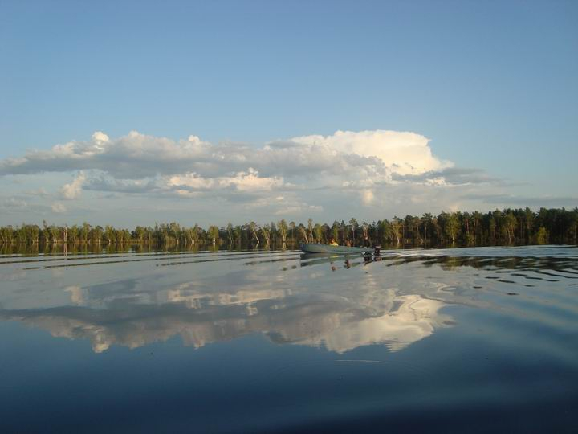

Озёра Омской области


Озеро Тенис
Расстояние от центра Омска - 207 км
Время в пути - 3 часа
Лучшее время для отдыха - весна, лето
Особенности - заповедник "Пеликаньи острова", удобное месторасположение
Озеро Тенис находится в Крутинском районе Омской области. Относится он к Иртышской озерно-речной системе и является вторым по величине водным объектом в группе Больших Крутинских озер(в них входят озеро Салтаим, озеро Ик, озеро Тенис). Тенис находится в Рамсарском списке водно-болотных угодий России, имеющих международное значение, как местообитание водоплавающих птиц, в частности кудрявого пеликана. В 2013 г. на территории водоема был создан государственный природный заказник регионального значения «Пеликаньи острова».
Площадь водного зеркала Тенис равна 118 кв. км. Длина — 16,4 км, ширина — 10,3 км. Средняя глубина составляет 1,9 м. Урез воды находится на высоте 98 м над уровнем моря. Через озеро Тенис протекает левый приток Иртыша — р. Оша. Также в водоем впадают реки Карасук, Балка сухая, Тлеутсай, теряющиеся среди многочисленных бессточных прудов. Наиболее высокие уровни воды наблюдаются в мае — июне, низкие — в период с сентября по октябрь.
Берега водоема низкие, дно илистое. Пойма шириной 0,1–1,0 км на юго-востоке и северо-западе переходит в болото. Со всех сторон объект окружают мелкие озера с тростниковыми островами-сплавинами. На западе Тенис соединен с озером Салтаим широкой (около 2 км) протокой. Внешне они похожи на два плеса одного большого водоема, по форме напоминающего бабочку.
Когда-то в Тенис водились несколько видов рыб: плотва обыкновенная сибирская, гольян озерный (мундушка), пескарь обыкновенный, карась золотой, окунь обыкновенный. Но после появления на р. Оша гидротехнических сооружений для регулирования воды в пруду, ихтиофауна озера изменилась. Случайно или целенаправленно в водоеме появились карась серебряный амурский, судак обыкновенный, пелядь озерная, карп, линь, толстолобик пестрый, лещь, рипус.
Запрещен вылов осетра сибирского, нельмы, стерляди, подкаменщика обыкновенного без лицензии. Также нельзя добывать объекты аквакультуры (искусственно выпущенных в озеро) без согласия пользователей рыбоводных участков.
Охраняемая природная территория «Пеликаньи острова» представляет собой участок площадью 250 га, состоящий из тростниковых островов с прилегающей акваторией озера Тенис. Уникальность этого заказника заключается в том, что здесь находится самое северное в мире место постоянного гнездования кудрявого пеликана.
Для этих птиц на пруду есть все необходимые условия. Они хорошо защищены от человека, высокие камышовые заросли хорошо скрывают их от посторонних глаз. Вокруг много рыбных мелководных озер, включая Ик и Салтаим. Первая колония появилась в этих местах в 80-х гг. прошлого века. Начиналась она с нескольких пар, а в 2015 г. уже насчитывалось 400 особей, тогда как в мире существуют всего 4280 пар кудрявых пеликанов.
Помимо пеликанов на территории заказника водятся чернозобая гагара, белая цапля, лебедь-шипун, мраморный чирок, краснозобая казарка, пискулька, красноносый нырок, шилоклювка, большой улит, тонкоклювый и большой кроншнеп. Также встречается черноголовый хохотун, занесенный в Красную книгу Российской Федерации.